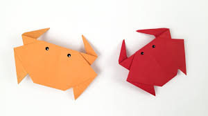
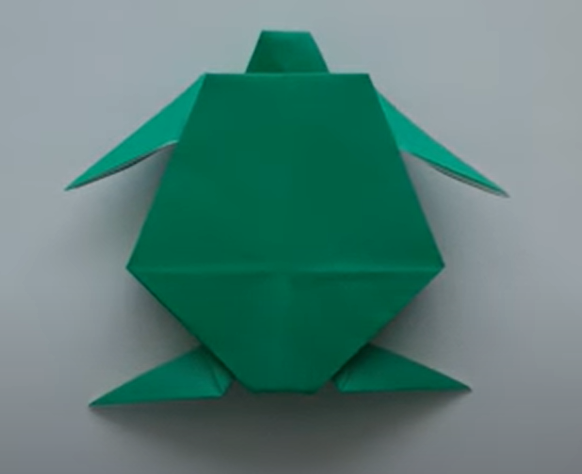
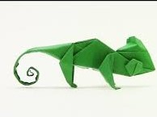

<!DOCTYPE html>
<!DOCTYPE html>
<html lang="en"></html>

    <head>
      
        <title>Origami Designs</title>
        <link rel="stylesheet" href="style.css" type="text/css">
    </head>
    <body>
       <div class="ab">
        <h1> Origami Designs</h1>
    </div>
        
        <div class="abc">
            <div class="nish">
                <center>
           <a href="https://www.youtube.com/watch?v=HQBFbDxlEcg" target=”_blank” >Video tutorial for Camel</a>
            <p>1. Camel</p>
            
            <p> <i>Facts about Camel</i></p>
        </center>
      
     <p>
     
            <ol>
                <li>Camels have three sets of eyelids and two rows of eyelashes to keep sand out of their eyes.</li>
                <li>Thick lips allow them to eat prickly plants easily without hurting themselves.</li>
                <li>Camels can completely shut their nostrils during sandstorms.</li>
                <li>Camels can run 40 miles per hour.</li>
                <li>Camels live 40-50 years</li>
            </ol> 
 </p>
    </div>
        
            
            <div class="nish">
                <center>
             <a href="https://www.youtube.com/watch?v=6QqBvy_yO_M" target=”_blank” >Video tutorial for Rabbit</a>
            <h3>2. Rabbit</h3>
            
            <p> <i>Facts about Rabbit</i></p>
        </center>
     
    <p>
            <ul>
                <li>Rabbits are very social creatures that live in groups.</li>
                <li>Like cats, happy rabbits purr when they’re content and relaxed.</li>
                <li>Rabbits are amazing athletes as they can jump as high as 90 centimetres in one leap.</li>
                <li>A female rabbit is called a 'doe' and a male rabbit is called a 'buck'.</li>
                <li>Their vision covers nearly 360 degrees.</li>
              
            </ul>
        </p>
    </div>
       
            <div class="nish">
          <center>
            <a href="https://www.youtube.com/watch?v=dMt7Glzlvv8" target=”_blank” >Video tutorial for Crab</a>
            <p>3. Crab</p>
            
            <p><i>Facts about Crab</i></p>
        </center>
        
        <p>
            <ul>
                <li>Crabs can walk in all directions, but they mostly walk and run sideways.</li>
                <li>Crabs are decapods, meaning they have 10 legs.</li>
                <li>The lifespan of a small crab averages around 3-4 years.</li>
                <li>But larger species of crab such as the giant Japanese spider crab can live for 100 years.</li>
                <li>Crabs have a thick external skeleton called an exoskeleton.</li>
               
            </ul>
        </p>
    </div>
       
            <div class="nish">
                <center>
                    <a href="https://www.youtube.com/watch?v=dI7i1_M_OYk"  target=”_blank” >Video tutorial for Turtle</a>
      <p>4. Turtle</p>
           
            <p><i>Facts about Turtle</i></p>
        </center>
        
      <p>
            <ul>
                <li>Turtles belong to one of the oldest reptile groups in the world.</li>
                <li>A turtle’s shell is actually part of its skeleton.</li>
                <li>They are cold-blooded creatures and have an incredibly long life span.</li>
                <li>Turtles don't have teeth, they use their beak-like mouth to grasp their food.</li>
                <li>Turtles breathe air and lay their eggs on land, which makes them amniotes. </li>
               
            </ul>
        </p>
    </div>
      
            <div class="nish">
                <center>
       <a href="https://www.youtube.com/watch?v=NziZuebfU8M" target=”_blank” >Video tutorial for Chameleon</a>
            <p>5. Chameleon</p>
           
            <p><i>Facts about Chameleon</i></p>
        </center>
       
       <p>
            <ul>
                <li>Chameleons mostly live in the rain forests and deserts of Africa. </li>
                <li> The color of their skin helps them blend in with their habitats. </li>
                <li>They have a panoramic view of their surroundings.</li>
                <li>some chameleon's tongues can be twice the length of their body. </li>
                <li>Their tongues consist of both muscles and bones, and can bend round to grab their pray.</li>
             
            </ul>
        </p>
    </div>
      
            <div class="nish">
                <center>
                    <a href="https://www.youtube.com/watch?v=1kZjq8f8Mpo" target=”_blank”>Video tutorial for Frog</a>
                    <p>6. Frog</p>
           
            <p><i>Facts about Frog</i></p>
        </center>
 
     <p>
            <ul>
                <li>Frogs don't need to drink water as they absorb it through their skin.</li>
                <li>A frog's eyes and nose are on the very top of their heads.</li>
                <li>Frogs have excellent night vision and are very sensitive to movement.</li>
                <li>Some frogs can jump over 20 times their own body length</li>
                <li>Frogs were the first land animals with vocal cords.</li>
             
            </ul>
        </p>
    </div>
    </div>
    </body>
</html>